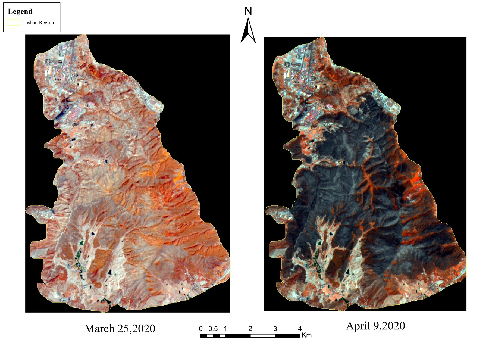
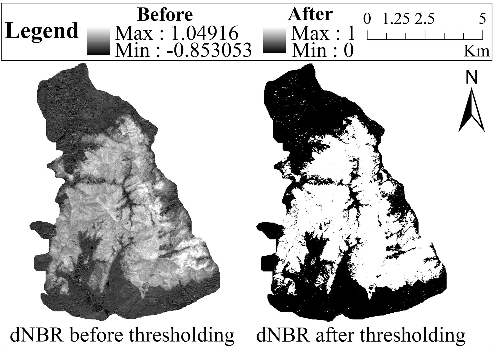
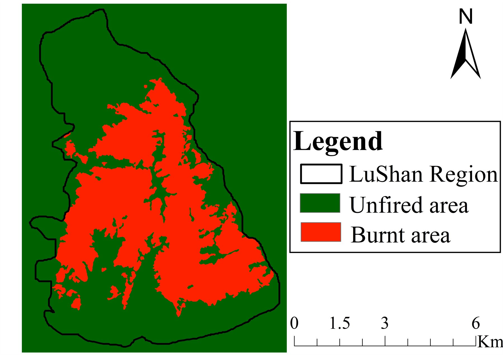
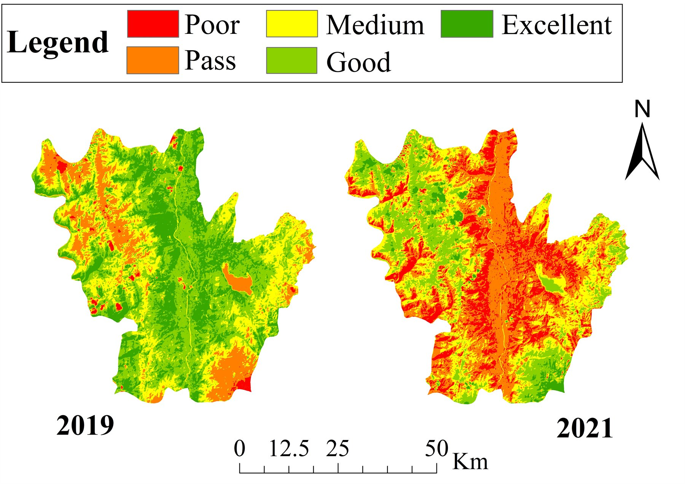
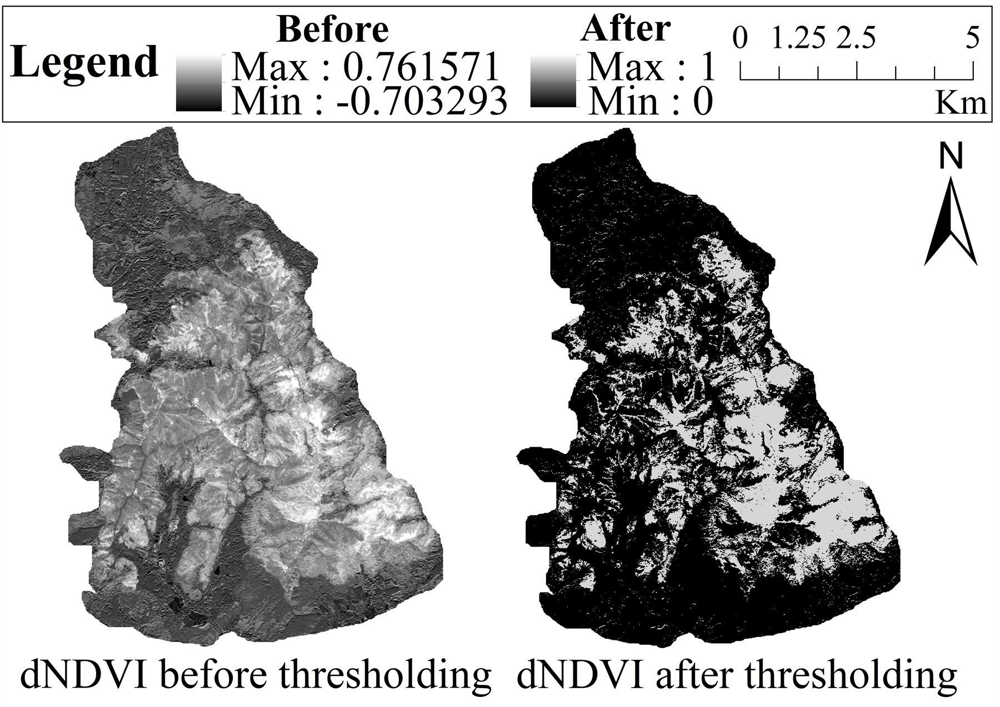
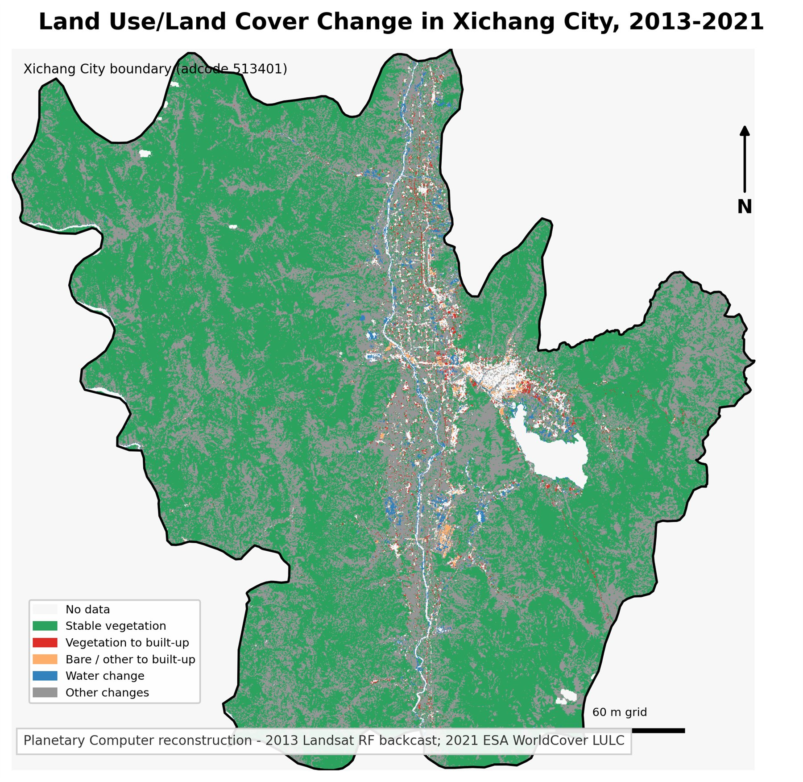
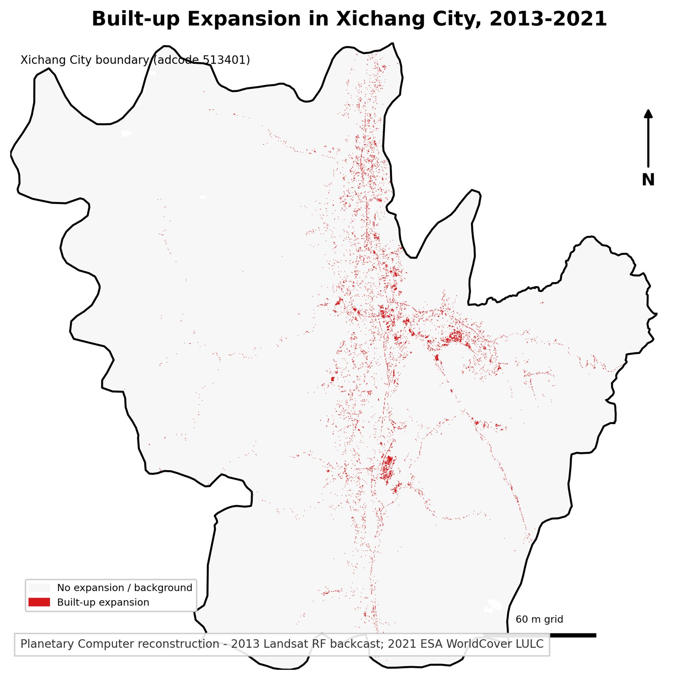
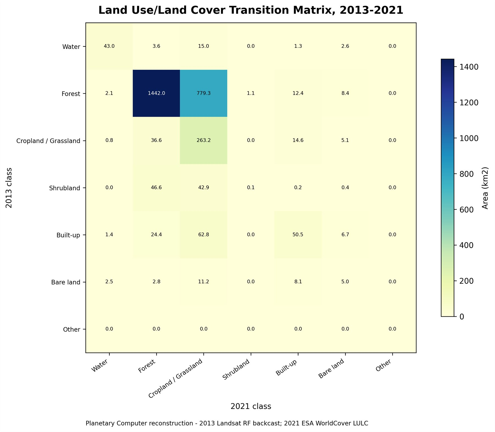
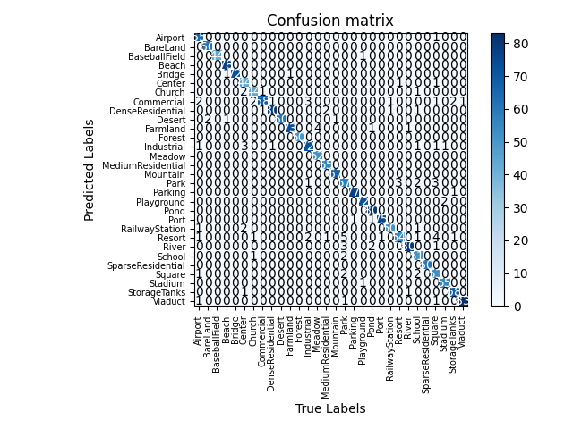

Featured Research
This section highlights my research interests and project experience in GeoAI, AI for Remote Sensing, wildfire risk modeling, ecological remote sensing, and remote sensing image interpretation.
Wildfire Risk Modeling in Southwest China
Keywords: Wildfire Risk Modeling; GeoAI; AI for Remote Sensing; Spatial Machine Learning; XGBoost; SHAP; GeoShapley; Multi-scale Geospatial Analysis; Ecological Remote Sensing
Status: Manuscript under review / manuscript in preparation
Overview
This research direction focuses on the spatiotemporal driving mechanisms of grassland and forest fires in Southwest China. It integrates multi-source remote sensing and geospatial data with machine learning and explainable AI methods to examine wildfire risk, spatial heterogeneity, and interpretable environmental drivers. The project is positioned at the intersection of GeoAI, AI for Remote Sensing, ecological remote sensing, and wildfire risk modeling. Specific results will be added only after the manuscript materials are updated.
Research Questions
- [To be added]
Study Area and Period
- [To be added]
Data Sources
- [To be added]
Methods
- [To be added]
Key Findings
- [To be added after manuscript update]
My Contribution
[To be added by Youbin]
Figures / Materials to be Added
- [Add study area map]
- [Add data and workflow diagram]
- [Add model performance comparison]
- [Add SHAP / GeoShapley interpretation figures]
- [Add spatial prediction or risk map]
Multi-source Remote Sensing Assessment of Wildfire Disturbance and Post-fire Ecological Dynamics in Xichang City
Keywords: Ecological Remote Sensing; Wildfire Disturbance; Landsat 8; Sentinel-2; dNBR; RSEI; Burned Area Mapping; Land-use / Land-cover Change; Post-fire Ecological Assessment; Xichang City
Overview
This umbrella project evaluates wildfire disturbance and post-fire ecological dynamics in Xichang City, Sichuan Province, using multi-source remote sensing and GIS-based spatial analysis. As Project Leader, I coordinated a workflow that connected forest fire monitoring, dNBR burned-area mapping, land-use / land-cover change analysis, and RSEI ecological assessment. The project integrated Landsat 8 and Sentinel-2 imagery to quantify burned area, evaluate ecological disturbance, and visualize landscape changes before and after the 2020 Lushan forest fire. It led to a first-author SPIE conference paper on land dynamic changes, a co-authored SPIE conference paper on forest fire monitoring, and a First Prize in the 1st Remote Sensing Technology Competition at Shandong Jiaotong University. The work demonstrates my experience in ecological remote sensing, satellite image preprocessing, thematic mapping, and organizing collaborative research outputs.
Subproject A: Forest Fire Monitoring and Burned Area Mapping in Xichang City
Objective
- Detect and map burned areas caused by forest fire disturbance.
- Compare remote-sensing-derived burned area with a field survey reference.
- Support post-fire ecological impact assessment using satellite imagery and GIS mapping.
Data
- Sentinel-2 imagery
- Landsat 8 imagery
- Field survey reference burned area for validation
Methods
- dNBR-based burned-area extraction
- Pre-fire and post-fire remote sensing image comparison
- GIS-based burned area mapping
- Area statistics and comparison with field survey reference
- RSEI-based ecological environment assessment
Key Results
- Estimated approximately 825 ha of burned area.
- The estimate was within 4% of the 791.6 ha field survey reference.
- Generated burned-area maps and fire monitoring thematic outputs for the Lushan fire area.
- RSEI analysis indicated that "excellent" ecological zones declined by 38.2%.
- Vegetation cover dropped by 3.3% after fire disturbance.
Subproject B: Land-use / Land-cover Change and RSEI-based Post-fire Ecological Assessment
Objective
- Classify land-use / land-cover patterns in Xichang City.
- Analyze land-use changes before and after wildfire disturbance.
- Assess post-fire ecological changes using RSEI.
- Visualize built-up expansion and land-use transition patterns.
Data
- Landsat 8 time-series imagery
- Sentinel-2 imagery for wildfire-related analysis
- Reconstructed public-data LULC visualizations for portfolio display
Methods
- Supervised classification for five land-use categories
- Land-use / land-cover change analysis
- Built-up area expansion analysis
- RSEI-based ecological assessment
- Transition matrix and land-use transfer visualization for the reconstructed portfolio outputs
- GIS thematic mapping
Key Results
- Classified five land-use categories using preprocessed Landsat 8 time-series imagery.
- Quantified 103.5 km² expansion of built-up areas in the original project analysis.
- Identified a 38.2% decline in "excellent" ecological zones and a 3.3% drop in overall vegetation cover.
- Reconstructed portfolio figures provide public-data visualizations of LULC change, built-up expansion, and transition-matrix patterns for 2013-2021.
My Contribution
- Role: Project Leader
- Conceptualized the research topic and developed the analytical framework for wildfire monitoring, land-use change analysis, and post-fire ecological assessment in Xichang City.
- Organized data collection and preprocessing using multi-source remote sensing datasets.
- Led the implementation of land-use / land-cover classification, burned-area mapping, RSEI-based ecological assessment, and GIS-based spatial analysis.
- Produced thematic maps, statistical summaries, and result interpretations for the project and subsequent conference papers.
- Led project reporting and manuscript refinement while coordinating collaboration among team members.
Outputs and Recognition
- First Prize, 1st Remote Sensing Technology Competition, Shandong Jiaotong University.
- First-author conference paper: Youbin He and Xiaolei Ju. XiChang City land dynamic changes based on the remote sensing data. ICGMRS 2023, SPIE Vol. 12978, 2023. DOI: 10.1117/12.3020749.
- Co-author conference paper: Rui Wang, Youbin He, Songyan Li, and Rubing Huang. Forest fire monitoring based on the remote sensing technology. ICGMRS 2024, SPIE Vol. 13223, 2024.
Selected Figures








Attention-Enhanced Deep Learning for Remote Sensing Scene Classification
Keywords: AI for Remote Sensing; Deep Learning; Remote Sensing Scene Classification; Efficient Channel Attention; ECA-ResNet34; ResNet-34; AID Dataset; PyTorch
Overview
This project addresses remote sensing image scene classification using an attention-enhanced convolutional neural network. The specific model, ECA-ResNet34, integrates Efficient Channel Attention blocks into ResNet-34 residual modules to strengthen channel-wise feature representation while preserving the residual learning structure. The model was validated on the AID dataset and demonstrates my foundational experience in AI for Remote Sensing, deep-learning experiment design, and intelligent interpretation of remote sensing imagery.
Research Objective
- Improve remote sensing scene classification using an attention-enhanced CNN architecture.
- Integrate lightweight channel attention into ResNet-34 while preserving the residual learning structure.
- Evaluate the proposed ECA-ResNet34 model on the AID dataset.
Dataset
- AID dataset: a 30-category aerial image scene dataset with 10,000 images collected from Google Earth.
- Each category contains 200-400 images with a 600 x 600 pixel size.
- The available project materials use a random 8:2 training / validation split.
Method
- Baseline: ResNet-34
- Attention mechanism: Efficient Channel Attention, ECA
- Proposed model: ECA-ResNet34
- Task: Remote sensing scene classification
- Experimental setup: Adam optimizer, initial learning rate of 0.0001, batch size of 16, 100 epochs for training without pre-trained weights, and 10 epochs for tests with pre-trained weights.
- Evaluation: overall accuracy, confusion matrix, and class-level precision.
Key Results
- Achieved 94.95% classification accuracy on the AID dataset.
- Improved accuracy by 3.45 percentage points compared with standard ResNet-34.
- The available paper draft reports that the identity variant of ECA-ResNet34 achieved the best non-pre-trained result among the tested ECA block placements.
- The confusion matrix and class-level evaluation indicate strong recognition performance for several scene categories, including BareLand, Beach, Forest, Mountain, and SparseResidential.
My Contribution
- Participated in data collection and research design.
- Contributed to the formulation of the research idea and experimental workflow.
- Independently implemented the experimental component, including model configuration, training, evaluation, and result analysis.
- Assisted in drafting, revising, and polishing the manuscript.
Outputs
- Role: Co-first author / core contributor
- IEEE conference paper: Remote Sensing Image Scene Classification Based on ECA Attention Mechanism Convolutional Neural Network.
- Publisher link: IEEE Xplore
- PDF: Available upon reasonable request, subject to publisher sharing policy.
Selected Figure

Additional architecture diagrams and training-curve figures will be added only after web-ready, publicly shareable versions are verified.